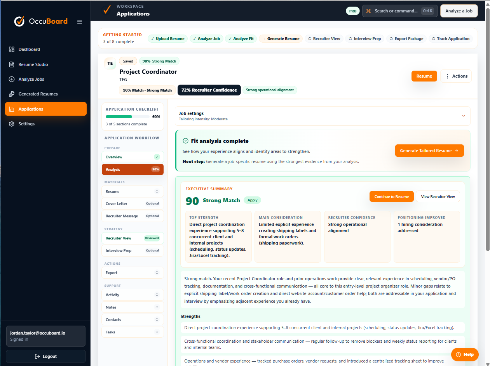

From business challenges to software worth using.
ARSO designs and builds custom business systems, software applications, and marketable products from the ground up—shaping each one around the people, workflows, and goals it needs to serve.
- Strategy & design
- Development & integration
- Launch & improvement



Custom Software & Product Development
Take an idea from a rough concept to software people can use, adopt, and buy.
ARSO brings product thinking and practical development together—from early workflows and interface design through development, integrations, launch, and ongoing improvement.

Put customer work and daily coordination in one clear view.
Connect customer relationships, project tracking, sales workflows, ownership, and follow-through in a system shaped around how your business operates.
See Buyers RecourseKnow what you have, where it is, and what needs to happen next.
Bring inventory, locations, orders, movement, and daily operational tasks into a dependable workspace built for quick decisions.
See The Loft inventory system

Use AI where it makes real work faster and clearer.
Build practical assistants, document-processing tools, automations, and integrations that reduce repetitive steps while keeping people in control.
See PH Scan document intelligenceGive every employee a clearer path to readiness.
Turn onboarding, procedures, instructional content, and team knowledge into a consistent learning system that is easy to follow and manage.
See Blue Springs Bowl training
Make performance visible while the work is happening.
Give teams a live view of the information that matters—from operational reporting to shared displays and leaderboards. Innovate Three pairs real-time rankings with automatic scrolling for office TVs and team screens.
See Innovate ThreeA clear path from challenge to useful software.
- 01Discover
Understand the opportunity, users, and workflow.
- 02Design
Shape the experience and define the right solution.
- 03Build
Develop, connect, and test the working system.
- 04Launch
Prepare the product and put it into real use.
- 05Improve
Learn from feedback and refine what matters.
What could better software make possible?
Bring ARSO a product idea you want to launch or an operational challenge your team needs to solve.